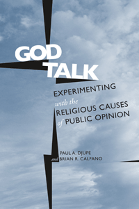

<body bgcolor="#FFFFFF" text="#000000" link="#0000FF" vlink="#CC0000" alink="#CC0000"><center><hr width="350" size="1" align="center" noshade>Explores religion's impact on political attitudes using a series of controlled experiments<hr width="350" size="1" align="center" noshade><p><a href="https://cdcshoppingcart.uchicago.edu/Cart/ChicagoBook.aspx?ISBN=9781439908655&&PRESS=temple" target="_top">Buy this book!</a> | <a href="https://cdcshoppingcart.uchicago.edu/Cart/Cart.aspx?PRESS=temple" target="_top">View Cart</a> | <a href="https://cdcshoppingcart.uchicago.edu/Cart/Cart.aspx?PRESS=temple" target="_top">Check Out</a></p><p></p></center><!--none//--><h1>God Talk</h1>
<H2>Experimenting with the Religious Causes of Public Opinion</H2>
<h3>Paul A. Djupe and Brian R. Calfano</h3>
<P>cloth 1-4399-0865-6 $85.50, Dec 13, <FONT COLOR=#990033>Available</FONT>
<br>paper 1-4399-0866-4 $30.95, Dec 13, <FONT COLOR=#990033>Available</FONT>
<br>Electronic Book 1-4399-0867-2 $29.95 <FONT COLOR=#990033>Available</FONT>
<BR> 276 pp
6x9
22&nbsp;tables 23&nbsp;figures
</P><BLOCKQUOTE><I>"</I>God Talk<I> is entirely novel in its approach. Its theoretical richness, its careful attention to research design, and the breadth of questions addressed reflect the authors� ambition and sophistication. This timely book has the potential to make a very large impact on the discipline."</I>
<br>&#151<b>David Barker</b>, Director, Institute for Social Research, California State University, Sacramento, and coauthor (with Christopher Jan Carman) of <I>Representing Red and Blue: How the Culture Wars Change the Way Citizens Speak and Politicians Listen</I><I></I></BLOCKQUOTE>
<P>Religion�s influence on public opinion, politics, and candidates has been widely discussed in political science for a generation. <i>God Talk</i> is the first volume that uses experimental methodology to establish whether and how that influence works.
<P>Paul Djupe and Brian Calfano provide an unprecedented look at how religious cues, values, and identity-driven appeals impact candidate selection, trust, interest group support, and U.S. public opinion about tolerance, the environment, foreign policy, and related issues.
<P>By situating their disparate, randomly assigned interventions within the broader framework of elite-based influence, the authors apply their new methodology to three questions: How do clergy affect congregation members? How are religious elites and groups and their public arguments evaluated? With what effect do political elites use religion? The results of their research provide a compelling framework for understanding the links between religion and politics.
<BR>&nbsp;<h2>Excerpt</h2><P>Excerpt available at <a href="http://www.temple.edu/tempress">www.temple.edu/tempress</a></p>
<BR>&nbsp;<h2>Reviews</h2>
<p><I>"An excellent book that is most unusual in the authors� use of their experimental method, </I>God Talk<I> is also distinguished by the range of alternative theories the authors examine, allowing them to assess how religion influences (or does not influence) public opinion. This is an important addition to the literature and will be an essential source for faculty and graduate students in public opinion and in religion and politics."</I> <br>&#151<b>Ted G. Jelen</b> Professor of Political Science, University of Nevada, Las Vegas, and author of <I>To Serve God and Mammon: Church-State Relations in American Politics</I>
<p><i>"What distinguishes </i>God Talk<i>, however, is not the empirical work comprising the body of the text, as useful as that may be in taking pulse of religion�s involvement in certain contemporary political arenas. Rather, it is the care with which each experiment is designed and discussed, and the contextualizing of each within broader themes and ideas.... </i>God Talk<i> provide[s] intriguing and provocative findings.... [W]e can learn much from this book."</I> <br>&#151<b><i>Contemporary Sociology</b></i>
<p><i>"</i>God Talk<i> provides a rich account of how religion shapes candidate and policy preferences. Through carefully constructed, executed, and analyzed experiments, the authors provide a more precise explanation of how religion is politically consequential.... </i>God Talk<i> offers one of the most thorough accounts of how religion functions in contemporary American politics, particularly in the context of political communication. The authors describe the bounds of elite influence, and they generate a more psychologically informed description of how religious labels serve as social identities. The book is an important read for those interested in the dynamics of public opinion and attitude change."</I> <br>&#151<b><i>Public Opinion Quarterly</b></i>
<p><i>"</i>God Talk<i> is an excellent introduction to the Religion and Politics (R&P) subfield of political science.... Whether the reader is new to the subfield or not, God Talk is an enjoyable and worthwhile read."</I> <br>&#151<b><i>The Journal of Politics</b></i>
<p><i>"Djupe and Calfano make a convincing case that 'God talk' is politically important, and the book is successful in promoting experimental methods in religion and politics research.... The book makes an argument about how theoretical accounts of religion and public life are grounded in methodological and ultimately epistemological choices, and for this reason is an important addition to the subfield."</I> <br>&#151<b><i>Politics and Religion</b></i>
<p><i>"[I]t is Djupe and Calfano�s contention that the subfield of religion and politics has not adequately addressed the exposure-adoption puzzle in religious settings�. There is much to be said for their argument and approach. They clearly delineate key theoretical strains in the religion and politics subfield, draw from cutting-edge work in political science more generally, and deploy a fresh and exciting research design. Their work presents many opportunities for developing new lines of inquiry."</I><br>&#151<b><i>Review of Religious Research</b></i>
<p><i>"Paul Djupe and Brian Calfano set out to change not only the way that scholars think about religion's influence on public opinion but also the methods that scholars use to investigate those relationships.... Many of the finding are intriguing.... </i>God Talk<i> makes [a] forceful argument that the religion and American politics subfield should embrace experimental methodology.... [and] a compelling case for the usefulness of these treatments.... [T]his book is a timely testament to the potential of survey-embedded experimental tools."</I> <br>&#151<b><i>Political Science Quarterly</b></i>
<p><i>"Djupe and Calfano�s research highlights a new way of thinking about religious influence.... There are many things to like about this book, including eight chapters each reporting separate sets of elegantly designed experiments, but I suspect its lasting influence in the field will be an urgent call for theoretical revision and methodological pluralism.... This is a great book for religion and politics scholars, it will lead to much discussion in seminars, and will surely stimulate greater use of the Psychological and Social Network approaches."</I> <br>&#151<b><i>Perspectives on Politics</b></i>
<BR>&nbsp;<h2>Contents</h2><P>
<p>Acknowledgments
<p>Introduction: Obama Is a Muslim? What Religion and Politics Research Has to Say
<p>1. Getting to the Heart of Things: The State of the Literature and the Promise of Experiments in Religion and Politics Research
<p><b>Part I: With What Effect Do Political Elites Use Religion</b>
<br>2. God Talk: Religious Cues and Electoral Support
<br>3. Why People Will Not Vote for Atheist Candidates, <i>coauthored with Chelsea Back</i>
<p><b>Part II: How Are Religious Elites and Groups and Their Public Arguments Evaluated?</b>
<br>4. Evangelizing the Environment: Decision Process Effects in Political Persuasion, <i>coauthored with Gregory W. Gwiasda</i>
<br>5. Justification Not by Faith Alone: Clergy Generating Trust and Certainty by Revealing Thought
<br>6. Between a Bloc and a Hard Place: Voters� Perceptions of Group Threat Credibility in Elections
<br>7. Fair and Balanced: Conditional Elite Effects on Threat Perceptions of Homosexuals among Evangelical Protestants, <i>coauthored with Samantha Webb</i>
<p><b>Part III: How Can Congregation-Based Elites Affect Members?</b>
<br>8. Divine Intervention? The Influence of Religious Values Communication on U.S. Foreign Intervention Policy
<br>9. The Civil Brake: Values as Contextual Influences on Elite Framing Effects
<p>Conclusion: An Emerging Approach to the Study of Religious Influence
<p>Appendix
<br>References
<br>Index
</P><BR>&nbsp;<H2>About the Author(s)</H2>
<P><b>Paul A. Djupe</b> is Associate Professor of Political Science at Denison University. He is the coauthor (with Christopher P. Gilbert) of <i>The Political Influence of Churches</i> and (with Laura R. Olson) of <i>Religious Interests in Community Conflict: Beyond the Culture Wars</i> and coeditor of the journal <i>Politics & Religion</i>.</P>
<P><b>Brian R. Calfano</b> is Associate Professor of Political Science at Missouri State University. His research interests include religion and politics, media, and social identity. He has published articles in a number of scholarly journals, including <i>Political Research Quarterly</i>, <i>Political Behavior</i>, <i>Politics and Religion</i>, <i>Social Science Quarterly</i>.</P>
<BR><H2>Subject Categories</H2>
<p><A HREF="/tempress/political.html" TARGET="_top">Political Science and Public Policy</a>
<BR><A HREF="/tempress/religion.html" TARGET="_top">Religion</a>
<BR>
</p>
<BR><h2 class="inpageheading">In the series</H2>
<P><I><a href="http://www.temple.edu/tempress/social_logic.html" onMouseOver="window.status='Click for other books in this series!'; return true;" onMouseOut="window.status=''; return true;" target="_top">Social Logic of Politics</a></i>, edited by Scott D. McClurg.
</p><p>The <i>Social Logic of Politics Series</i>, edited by Scott D. McClurg (formerly edited by Alan S. Zuckerman), directs attention to several related clusters of research in the social sciences. At the core is a theoretical principle: individuals make political decisions, like other choices, by taking into account cues from other persons. Studies move from individuals to groups to large scale collectivities. Usually examining micro-politics-voting and other forms of political participation; the place of politics in households, the family, the friendship unit, and the neighborhood- this research also studies how broader political and social contexts influence and are influenced by these micro-processes. It includes as well "small group behavior" in political institutions, such as exchanges of cues in legislatures and patron-client relations in bureaucratic agencies and political parties. Books in The Social Logic of Politics Series will apply research techniques that run the gamut of contemporary political science, sociology, communications, and geography.</p>
<p align="center"><a href="https://cdcshoppingcart.uchicago.edu/Cart/ChicagoBook.aspx?ISBN=9781439908655&&PRESS=temple" target="_top">Buy this book!</a> | <a href="https://cdcshoppingcart.uchicago.edu/Cart/Cart.aspx?PRESS=temple" target="_top">View Cart</a> | <a href="https://cdcshoppingcart.uchicago.edu/Cart/Cart.aspx?PRESS=temple" target="_top">Check Out</a></p><p><font face="Arial" size="1"><a href="copyright.html" onMouseOver="window.status='Web Copyright Policy';return true;" onMouseOut="window.status=''" title="Web Copyright Policy">&copy;</a> 2016 <a href="http://www.temple.edu" target="new" onMouseOver="window.status='Link to Temple University home page';return true;" onMouseOut="window.status=''" title="Link to Temple University home page">Temple University</a>. All Rights Reserved. http://www.temple.edu/tempress/titles/2209_reg.html</font></p>